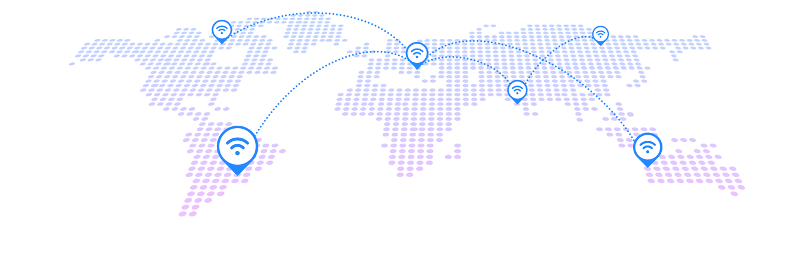

- 1
- 2
- 3
技术服务
平台主要为一带一路国家提供“数据中心+云服务”。首先在当地建设云计算数据中心，把客户现有的应用全部迁移到云中心，接下来结合客户需求和我们的云方案，提供一系列的咨询、规划、建设以及后期的服务和运维服务，为客户提供全面的服务。在一带一路沿线国家推进税务云项目服务、平安城市运维服务和HPC（超算系统）运维服务。
浪潮一带一路国家云服务运营公共服务平台在俄罗斯、赞比亚、埃塞俄比亚等国都建立了自己的数据中心和云服务平台。这些平台除了可以为浪潮威海海外服务有限公司自己的客户提供大数据和云服务，也可以为有在这些国家开展业务意向的中国企业提供现成的数据中心和云服务平台.
浪潮天梭K1 950，采用模块化架构和全冗余技术，充分保障业务系统随需而动，弹性部署，以更优方式提供高性能、高可用、高效率的IT资源.
浪潮天梭K1 910，全新自主研发的一款8路关键应用主机，系统采用业界先进的互联模式，模块化设计，可靠性达99.9994.
浪潮天梭M13,支持高达48TB内存容量的千核级新一代关键应用主机，拥有单日处理数十亿笔交易的强大计算能力，为客户核心业务量身打造.
浪潮天梭TS860,浪潮自主研发的高端八路服务器，采用业界领先的高速互联设计，具备五大关键特性，拥有60余项RAS特性，可靠性达99.999%.
平台为国内企业提供信息服务。利用平台的海外资源，为国内企业，尤其是想在一带一路国家开展业务的企业，为其提供海外的关键信息，包括开拓业务相关行业的发展情况、行业内龙头企业信息、与之相关的国家政策等信息，为企业在海外的发展提供帮助。
浪潮凭借在数据中心建设和云服务的能力，通过整合社保、金融信息资源，为莫桑比克提供了领先的社保终端服务方案，打造公共服务智能化，提升公共服务水平和能力、形成线上线下融合的服务格局。
项目规模：300万美元
浪潮为其建立了全国统一的网络发票管理与查验云平台、电子发票管理和开具云平台、办税服务综合云平台。通过采用云计算，不仅实现税务行业内税局采集共享，也帮助税务机关将数据转换为服务，提升服务价值，实现信息管税。
项目规模：170万美元
浪潮为印尼建设国家级数据中心，提供整体方案设计和数据中心建设，围绕当地政府机构和企业的信息化，提供技术支撑和云计算等方面的业务。
项目规模：1000万美元
为提高企业正确使用金融产品、服务和防范金融风险的意识，使企业更好的利用金融资源助力企业发展，浪潮威海海外服务有限公司联合威海市企业海外发展联合协会于2019年7月31日举办“走出去”企业融资经验分享沙龙
为有效降低金融成本以及项目风险，增加客户在区域的竞争力，浪潮威海海外服务有限公司联合威海市企业海外发展联合协会于2020年6月30日举办“走出去”企业海外融资案例分享会
随着新冠病毒在全球的传播，热成像体温检测作为防控疫情的重要设备，海外市场需求快速增长，为更好地筑起“一带一路”科技防疫屏障，浪潮威海海外服务有限公司联合威海市企业海外发展协会于2020年7月17日举办热成像防疫测温设备技术经验专题讲座